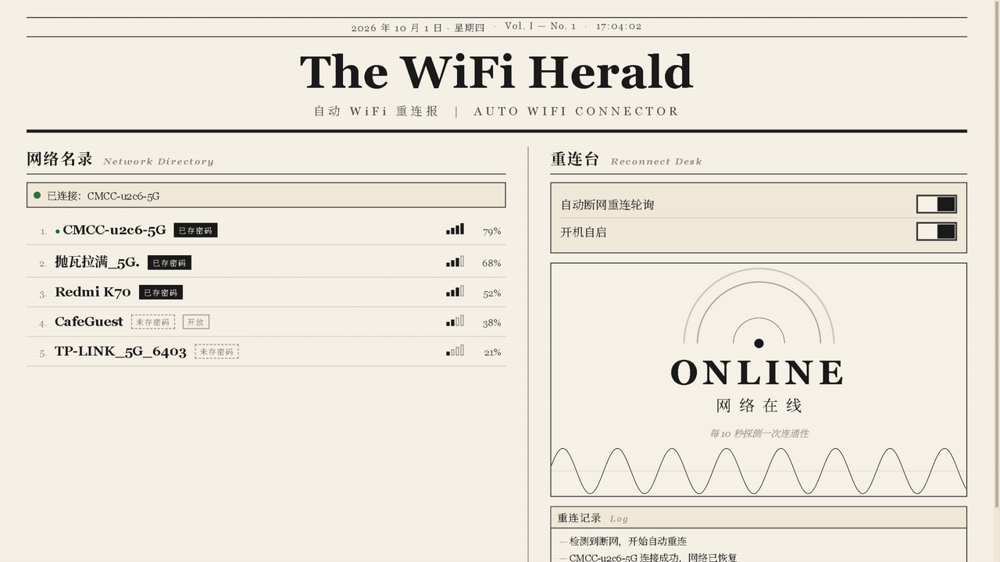
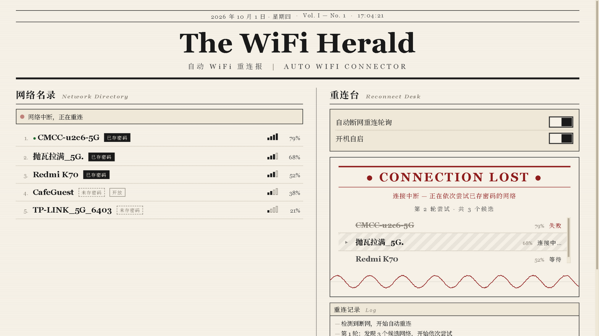
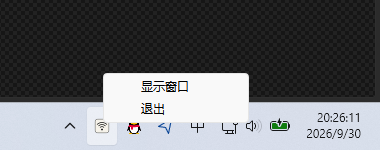

自动 WiFi 断网重连 · RUST + TAURI 2
笔记本的 WiFi 有时明明显示已连接，网页却打不开。Auto WiFi Connector 周期性探测互联网连通性， 一旦判定断网，便取所有「可见且已保存密码」的网络，按信号强度依次尝试连接， 直到真正恢复上网；一轮未恢复则等待后继续，直到成功为止。

判定断网后，右列切换为恢复视图：红色头条标示连接中断， 候选网络按信号降序逐行尝试——连接中的行显示斜纹流动，失败的行划上删除线，成功的行反色盖定， 底部日志逐行记录全过程。

每 10 秒: WiFi 已关联 且 任一探测端点可达?
├─ 是 → 保持监控
└─ 否 → 候选 = 可见网络 ∩ 已保存配置, 按信号降序
依次: netsh 连接 → 等待关联(≤12s) → 验证连通性
任一成功即恢复; 全部失败则 15s 后开始下一轮
关闭窗口后程序隐藏到系统托盘继续监控；右键托盘图标可选择「显示窗口」或「退出」。 程序默认注册开机自启，可在界面中关闭。

从 Releases 下载 zip 解压即用。程序未购买代码签名证书（多数开源项目相同），首次运行时 Windows 可能显示 SmartScreen 提示「Windows 已保护你的电脑」，点击「更多信息 → 仍要运行」即可。
每个 Release 附带 .sha256 校验文件，可用 certutil -hashfile 文件名 SHA256 核对下载完整性。
环境要求：Rust 1.77+、Windows 10/11。
git clone <repo-url> cd auto_wifi_connector/src-tauri cargo run # 调试运行 cargo test # 单元测试 cargo tauri build # 产出安装包（需 tauri-cli）
| 参数 | 值 | 说明 |
|---|---|---|
| CHECK_INTERVAL | 10s | 连通性检测周期 |
| ASSOCIATE_TIMEOUT | 12s | 单次连接等待关联完成的超时 |
| ROUND_DELAY | 15s | 一轮候选全部失败后的等待 |
Auto WiFi Connector · MIT License · 由 Rust 与 Tauri 印制